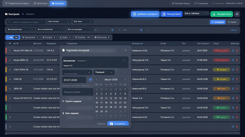
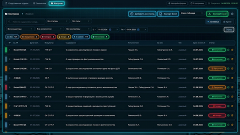
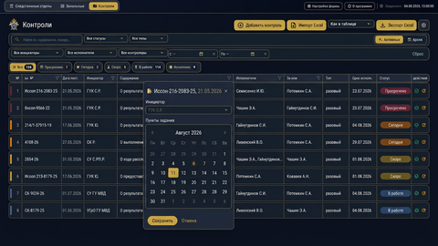
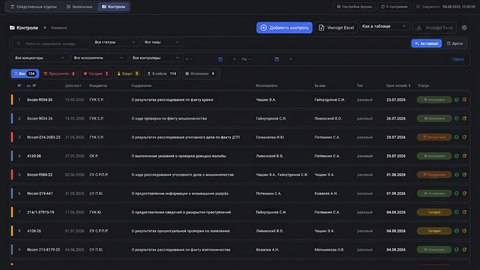
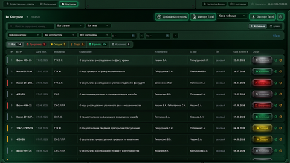
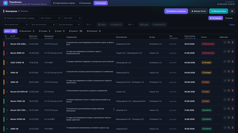
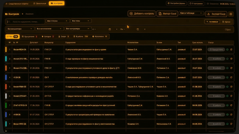
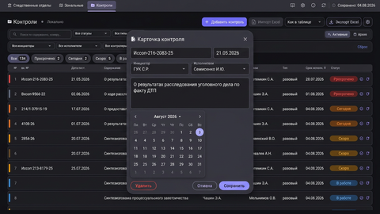
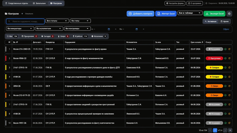
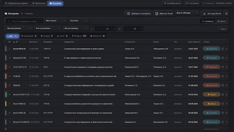

Серия 1 — варианты раскладки
5 мокапов
Excel-Pro
Классическая таблица с фильтрами по колонкам. Близко к текущей Excel-схеме, но в современном виде.
Master-Detail
Список контролей слева, детальная карточка с пунктами и сроками справа.
Cards Grid
Карточная сетка: каждый контроль — отдельная плитка со статусом, сроком и исполнителями.
Deadline Board
Kanban-доска по срокам: просрочено, сегодня, скоро, в работе, исполнено.
Command Center
Дашборд сверху + таблица + выдвижная панель детализации.
Серия 3 — премиальные скины
6 мокапов
Graphite Pro
Сдержанный инженерный интерфейс: тонкие границы и ясная таблица.
Vercel / Geist
Воздушный монохромный минимализм с единственным синим сигналом.
Linear
Мягкая глубина, индиго-навигация и аккуратные pill-компоненты.
Emerald Ops Premium
Оперативный пульт: строгая сетка и световые статусы без визуального шума.
Midnight Gold Premium
Сдержанный государственный premium: navy, латунный акцент и серьёзный ритм.
Cobalt Archive
Современный архивный стиль: крупные поверхности и ясная иерархия.
Открыть галерею серии v3 →
Фото-мокапы — 10 направлений дизайна
10 PNG 1600×900{kind=link}

01 · Glass Dark
Глубокий синий, матовые «стеклянные» панели, мягкое свечение. Максимальный «вау».
{kind=link}

02 · Neon Ops
Оперативный центр: неоновые статусы, циановая подсветка, моноширинные цифры.
{kind=link}

03 · Premium Gov
Солидный гос-инструмент: navy, золото/латунь, строгая сетка.
{kind=link}

04 · Minimal Light-Dark
Linear/Notion-стиль: серо-графит, много воздуха, индиго-акцент.
{kind=link}

05 · Emerald Command
Зелёно-чёрная консоль: изумрудные акценты, статусы-«лампы».
{kind=link}

06 · Aurora Gradient
Тёмная база с мягкими северными градиентами на шапке.
{kind=link}

07 · Terminal Amber
Ретро-терминал: янтарный текст, моноширинные цифры, плотная сетка.
{kind=link}

08 · Fluent Material
Material 3 dark: округлые карточки, тональные поверхности, фиолет.
{kind=link}

09 · High Contrast Pro
Максимальная читаемость: чёрный, белый текст, жирные границы. Для Win7/старых мониторов.
{kind=link}

10 · Soft Neumorph
Тактильный неоморфизм: приподнятые карточки, пыльно-синий акцент.